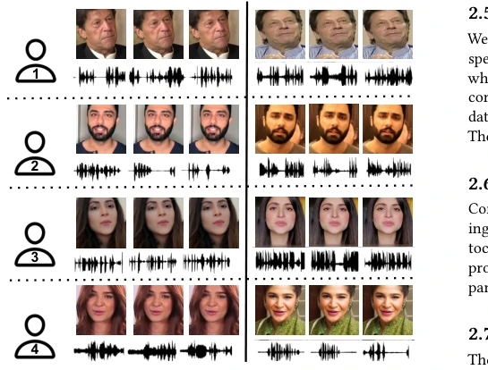
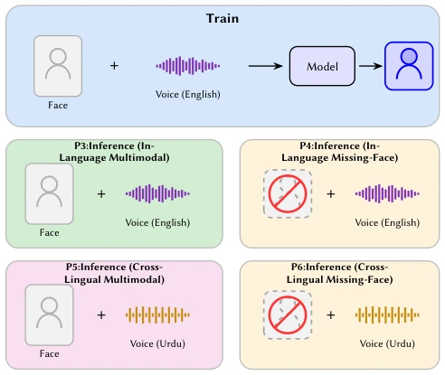
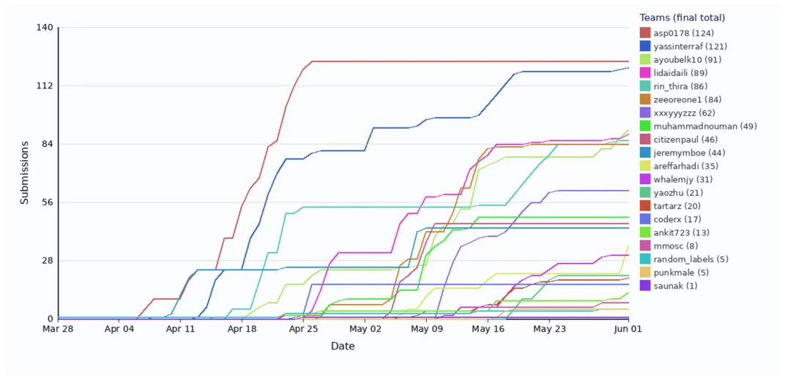

This report on the POLY-SIM 2026 challenge is less a technical paper and more a wake-up call for the field of multimodal biometrics. It reveals the academia's blind optimism about "robustness": existing models are perfect in the lab but collapse once in real-world scenarios. Although the Top 3 teams achieved 99% accuracy, this relied on using test set data for unsupervised clustering, which constitutes an "open-book exam" in strict inference, exposing the false prosperity of generalization capabilities. The baseline model FOP achieved only 43% accuracy under cross-lingual missing modality, indicating a huge gap between current technology and true deployment. For embodied intelligence, this means robots relying on such models will fail completely in cases of privacy occlusion or foreign language interaction. This is more like a "fault-finding" session, reminding us not to be confused by high metrics, but to focus on failure modes under real constraints, rather than merely pursuing leaderboard rankings on datasets.
Existing speech recognition systems typically assume complete modalities and single language during training and testing [2, 18, 19]. However, in real-world applications, modality missing due to camera occlusion or microphone failure is the norm, and users may switch languages. Literature [15, 20, 24] indicates that cross-lingual scenarios lead to significant performance degradation, while modality missing is a pervasive issue in multimodal learning [1, 5-7, 11, 12, 14, 25]. The POLY-SIM challenge aims to simulate these complex situations, evaluating model generalization capabilities in English training, Urdu testing, and missing facial information. This is not merely an academic metric, but aims to solve the awkwardness of robots or intelligent assistants "not hearing clearly, not seeing clearly, not understanding" in real interactions, promoting the migration from ideal data to real-world data.

Figure 2: Audio-visual samples randomly selected from the MAV-Celeb dataset [16, 20, 23]. The visual data contains dif- ferent variations such as pose, lighting condition, and motion. (Left) The block shows data of speakers speaking English. (Right) The block shows data of the same speakers speaking Urdu language.
The task is defined as multimodal speaker classification. Training data contains only complete audio-video pairs in English. The testing phase is divided into four protocols: P3 same-language multimodal, P4 same-language missing vision, P5 cross-language multimodal, P6 cross-language missing vision. The baseline method FOP [22] adopts a dual-branch architecture, extracting features using pre-trained CNN and audio encoder respectively, then combining via a fusion module, optimizing using orthogonal projection. However, winning teams such as MaskedFOP [4] and AMR [30] did not limit themselves to training data, but utilized input features during the testing phase (including target language samples) for unsupervised clustering or adaptation, thereby significantly improving accuracy. Although this "utilizing test set" strategy is effective, it deviates from the assumptions of strict inference, and requires sufficient target language sample support, limiting application in low-resource language scenarios. Additionally, some teams submitted identical files, indicating that different methods may converge to similar solutions under specific protocols, requiring vigilance regarding the distinctiveness of evaluation.

Figure 1: POLY-SIM 2026 evaluation protocol. The top blue box represents the training phase, for which English and complete (both audio and image) data is used. Each of the boxes below represents a different evaluation protocol (P).
Based on the MAV-Celeb dataset [16, 20, 24], containing English and Urdu interview videos. The evaluation metric is P-accuracy, taking the average of the four protocols. Baseline FOP [22] average accuracy is only 73.37%, especially dropping to 40-50% in missing modality and cross-lingual scenarios (P4, P6). Winning team MaskedFOP [4] reached 99.89%. The main finding is: although rules prohibit using test labels, utilizing test input features for unsupervised adaptation is key to performance leap. This reveals current methods' dependency on test data distribution, rather than true zero-shot generalization capabilities. Additionally, some teams submitted identical files, indicating that different methods may converge to similar solutions under specific protocols, requiring vigilance regarding the distinctiveness of evaluation. The challenge lasted two months, with a total of 952 submissions, reflecting the community's attention to this issue, but the results also suggest that future research should shift towards cross-lingual generalization methods that do not rely on test data.

Figure 3: Cumulative submission counts per team over the grand challenge duration (March 27 -June 1, 2026). Each line represents the running total of submissions for one of the 18 participating teams, ordered by final cumulative total (highest to lowest). Steeper slopes indicate periods of higher submission activity, while plateaus indicate inactivity. A total of 952 submissions were recorded across all teams during the observation window.